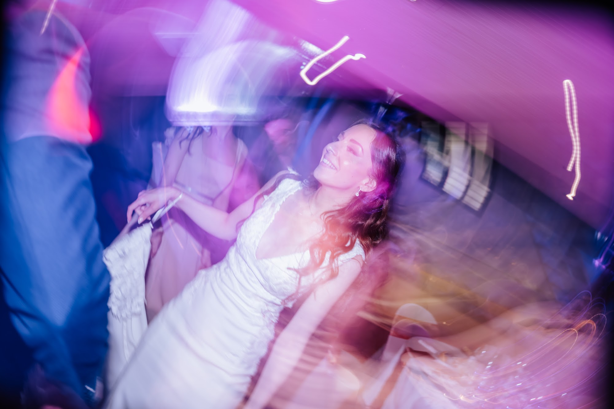

Corporate Party Photographer Lyon: Documenting Atmosphere and Energy
As a corporate party photographer in Lyon, I see private company celebrations as a vibrant tapestry of shared stories and camaraderie. When the workday ends and team members gather to mark a milestone, the real spirit of a group comes alive. My role is to document those spontaneous interactions with an editorial, unobtrusive eye.

Cocktail hour: capturing relaxed connections and conversations
The first glasses clinking, the rising hum of conversation in the foyer, and warm hellos set the rhythm of the night. Guests arrive in small groups, let go of daily workplace routines, and take in the setting. This opening hour offers the most genuine exchanges before formal speeches take place.
I move softly among the guests with fast prime lenses. By working candidly and keeping my distance, I capture natural smiles, animated discussions, and genuine warmth without staging a single scene. This approach creates an authentic chronicle of your company culture.

Documenting event styling and culinary details at your gala
Months of planning go into designing an annual gala. From floral arrangements and personalized table stationery to architectural lighting and fine catering, every detail reflects your brand's attention to quality. These visual elements deserve careful preservation before the room fills.
I arrive early on site to photograph the empty room in its pristine state. I frame wide architectural perspectives, capture delicate table settings, and document plated dishes as they leave the kitchen. These images provide your event planners and internal communications teams with pristine assets.

Speeches and milestones: highlighting collective pride
Whether it is an address from leadership, an internal award presentation, or celebrating yearly achievements, speeches anchor the celebration. The focus turns toward the stage, creating powerful visual contrasts between the speaker in the spotlight and the audience in the shadows.
I focus on capturing both the speaker's passion and the crowd's genuine reactions: shared laughter, thoughtful expressions, and enthusiastic applause. These unscripted moments reveal team cohesion far better than any standard corporate portrait.
Handling low light without disrupting the evening ambience

Evening gatherings present complex lighting challenges. Dim mood lighting, candlelit tables, and colored venue uplights require seasoned technical command. Blasting an entire ballroom with direct on-camera flash strips away the warm atmosphere that event designers carefully created.
I rely on low-light cameras and wide-aperture lenses that pull detail from deep shadows. When supplemental lighting is required, it is placed remotely and diffused gently to sculpt figures without blinding guests. The true warmth and color palette of your venue remain untouched.
Dynamic event video to bring the party back to life
While still images preserve specific expressions, a short recap video captures movement, sound, and the escalating tempo of the night. A cinematic event film brings back the laughter, the toast, and the energy of the dance floor in a compact format.
I film brief, handheld sequences with fluid movements, blending ambient audio with a thoughtfully chosen soundtrack. The resulting highlight video can be shared across internal platforms or professional networks the very next week to celebrate your team's collective momentum.

The dance floor: capturing high energy in motion
Once dinner wraps up and the music turns up, colleagues let loose and celebrate freely. Documenting this phase requires quick reflexes, intuitive timing, and a deep respect for personal space. You want to capture the excitement without making anyone feel self-conscious.
I use intentional motion blur and slow shutter speeds to convey rhythm, dancing silhouettes, and genuine joy. Flashing party lights turn into soft trails of color, echoing the vibrancy of the dance floor and delivering lively visual memories of the celebration.

Iconic event venues across Lyon and surrounding regions
From renovated industrial warehouses in Confluence to historic châteaux in the Beaujolais hills or private townhouses in the Presqu'île district, Lyon offers diverse settings for corporate gatherings. Each venue carries its own architectural personality and distinctive light.
I adapt my framing to the heritage and scale of each location. Whether your gala takes place overlooking the Saône river or inside a stone-walled estate near Lyon, France, I incorporate the setting to give your celebration a distinct sense of place.

Frequently asked questions
How do you capture photos in very dark reception venues?
I work with fast prime lenses and high-performance sensors that preserve ambient venue light without blinding guests. When additional light is needed, I use subtle off-camera setups that keep the original atmosphere intact.
How fast will our company receive the finished photos?
I deliver a curated preview set within 24 to 48 hours for your internal newsletters and press releases. The full edited gallery is completed and delivered shortly thereafter.
Can you handle both photo and video coverage for our party?
Yes, I offer combined photo and video packages for intimate gatherings, as well as coordinated team coverage for larger galas. This ensures a cohesive visual style across all stills and video edits.
Can team members download their individual photos easily?
Yes, you receive a password-protected online gallery where team members can browse the event photos and download high-resolution files directly to their devices.
Let us discuss the details of your upcoming corporate celebration in Lyon to tailor a photo and video package that matches your vision.
Let’s talk about your project